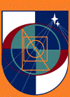

|
MasterMove, de andere ICT
opleiding Website in aanbouw. Voor informatie: info@mastermove.info |
|
|
|
MasterMove stelt
zich ten doel talentvolle mensen op te leiden tot uitblinkers in de
ontwikkeling van software voor industrie, wetenschap en techniek. |
|
Daarbij
maken we gebruik van kleinschalige kennisoverdracht door leermeesters,
ervaren experts in hun vak. De lessen worden naar keuze in het nederlands of in het engels
gegeven. |
|
We
stellen slechts één voorwaarde aan jou als student: de oprechte wil om te
leren. |
|
De
opleiding kent twee trappen: fundamental class en master class. |
|
|
|
Fundamental classes zijn
bedoeld voor mensen die zich de basis van een bepaald vak nog niet volledig
hebben eigengemaakt. |
|
In een fundamental class werk je op
jouw individuele niveau. Hoeveel lessen je nodig hebt hangt van je voorkennis
af. In een fundamental class
hoef je je nooit te vervelen, maar ook niet hijgend
achter de wagen aan te rennen. Jij groeit in jouw tempo met de individuele
begeleiding van een expert. |
|
Wat ook anders is dan bij de meeste opleidingen, is dat je vanaf het begin les krijgt van ervaren vakmensen. Ook dit is weer heel logisch. Wie wil er nu eerst iets fout aanleren en daarna goed? Een goed begin is het halve werk. |
|
|
|
Een paar praktijksituaties waarbij het volgen van een fundamental
class je kan helpen: |
|
1. Je
hebt belangstelling voor technische informatica, maar niet de juiste
diploma's. Een fundamental class,
eventueel gevolgd door een master class gecombineerd met werk, is een grondige manier
om je die kennis per vak eigen te maken. Je bepaalt zelf welke vakken je
interessant vindt. De in veel opleidingen aanwezige ballast ontbreekt geheel. |
|
2. Je
volgt een universitaire of HBO studie waarbij kennis van wiskunde of
programmeren wordt verondersteld die je in onvoldoende mate hebt. Je wilt je
die kennis graag eigen maken en hebt ook werkelijk belangstelling voor deze
vakken. Een fundamental class
is in dat geval een efficiënte manier om je doel te bereiken en je
studiesucces veilig te stellen. |
|
|
|
Master classes
zijn bedoeld voor mensen die een bepaald vak goed genoeg
beheersen om zich te realiseren dat ze nog veel te leren hebben. |
|
Master classes zijn uitdagend en vergen zowel inzet als aanleg. Elke master class begint met een
individueel gesprek, waarin jij en je leermeester vast stellen of je met
elkaar wilt werken. |
|
|
|
Voorbeelden van situaties waarin het volgen van een master
class je verder helpt: |
|
1. Je
werkt al jaren in een bepaald vakgebied en je leert er elke dag wat bij, maar
je wilt bovengemiddeld goed worden in wat je doet. In principe ben je in
staat dit zelfstandig voor elkaar te krijgen, maar je realiseert je dat je
dit proces kunt versnellen en verdiepen door te profiteren van de ervaring
van een expert. Een masterclass kan zorgen dat je in korte tijd een sprong
maakt. |
|
2. Je hebt een universitaire of HBO opleiding in vakgebied waarbij het gebruik van de computer als hulpmiddel een grote rol speelt, maar programmeervakken bijzaak waren. Je bent er echter achter gekomen dat juist het maken van professionele software op je vakgebied enorme kansen bied. Dus wil jij je op dat terrein specialiseren. |
|
|
|
Je leermeester: Belangrijk tijdens en na je opleiding. |
|
Bij MasterMove draait het persoonlijk contact met experts in
combinatie met actieve zelfstudie en oefening. Dat is de enige garantie dat
je echt iets leert. Na tientallen jaren onderwijsvernieuwing concluderen wij
dat formele controlesystemen geen garantie zijn voor het afleveren van goede
vakmensen. |
|
Als je
een vak gaat leren bij een bepaalde leermeester, is er altijd een
startgesprek. Daarin wordt je ingangsniveau vastgesteld en een lesplan
gemaakt. Daarnaast is het een mogelijkheid om persoonlijk vast te stellen of
je vertrouwen in deze leermeester hebt. Alleen als dit het geval is, begin je
met de opleiding. |
|
MasterMove werkt met certificaten per vak, op persoonlijk gezag van je leermeester.
Een leermeester zal zijn naam alleen aan jouw certificaat verbinden als je
naar zijn persoonlijk oordeel die naam eer aan doet. |
|
Een
leermeester zal, indien je gaat solliciteren, bereid zijn z'n eigen gewicht
in de schaal te leggen om jouw toekomstige werkgever telefonisch of
schriftelijk op de hoogte te stellen van je kwaliteiten. |
|
|
|
Is MasterMove iets voor jou? |
|
Reguliere,
overheids-geaccrediteerde opleidingen, met hun vaak
voor jaren vastliggende lesprogramma's, vormen de massaal gevolgde hoofdroute
naar reguliere, overheids-erkend diploma's. Door
aan een dergelijke opleiding deel te nemen, leg je een veilige, verstandige
basis voor je toekomst. |
|
Wij
betwijfelen echter of je zo excellentie kweekt. Volgens ons is een opleiding
geen fabriek waarvan je de output in een spreadsheet kunt weergeven, maar een
werkplaats, waarin individuele talenten tot bloei komen door de inzet van
bevlogen meesters in hun vak, en de kwaliteit van de boom meer duidelijk wordt
door de smaak van de vruchten dan door hun gewicht. MasterMove is dus een aanvulling op het bestaande opleidings-spectrum,
en biedt je de mogelijkheid op bepaalde punten uit te blinken. Als je daar de
waarde van inziet, is MasterMove voor jou. |
|
|
|
Fundamental classes
Masterclasses
Functional Programming Patterns and Category Theory
Leermeesters |
|
|
|
MasterMove, voluit MasterMoveGild, is
geen bedrijf met winstoogmerk of stichting, maar een vrijwillig
samenwerkingsverband van ervaren vakmensen uit de ICT wereld, verbonden door
één doel: de overdracht van diepgaand inzicht en ruime, diverse ervaring. Wij
vinden overdracht van technische kennis in Nederland van essentieel belang
voor de economie op lange termijn. Leermeesters
(M/V) die aan MasterMove willen deelnemen, worden
uitsluitend toegelaten na positieve uitslag van een peer review
door bij MasterMove aangesloten vakgenoten. Daarbij
komen zowel theoretische kennis als practische
productie aan de orde. De kwaliteit van het gebodene
wordt gegarandeerd door collegiale intervisie, individuele beroepseer en de
gedeelde wens, onze goede naam hoog te houden. Daar spreken wij elkaar op aan. Indien je een vak
bij een bij MasterMove aangesloten leermeester wilt
volgen, ga je rechtstreeks met hem een leerovereenkomst voor dat vak aan,
zonder enige overhead. Zijn handtekening komt op je certificaat en hij is en
blijft je aanspreekpunt voor dat vak. We houden het graag simpel en
concentreren ons op waar het om draait: overdracht van ervaringskennis door
experts. |